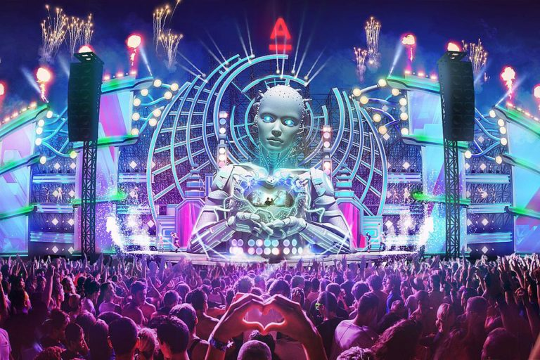

Alfa Fututure People
Alfa Future People es el festival Ruso de Música Electrónica celebrado en la ciudad de Bolshoe Kolzino iniciando en el 2014
Alfa Fututure People
Alfa Future People es el festival Ruso de Música Electrónica celebrado en la ciudad de Bolshoe Kolzino iniciando en el 2014
RED (Defcon1 2019)
Fue fundada en 2003 por el organizador del festival Q-dance. El festival toca principalmente hardstyle y géneros relacionados, como techno hardcore, hard house y hard trance.
Kinetic Field (EDC Orlando 2017)
Electric Daisy Carnival (EDC) es un festival de música electrónica organizado por la empresa Insomniac Events. El festival abarca géneros como EDM, House, Dance, Electro, drum and bass, Techno, dance-punk, Hard dance, Dubstep, Trance, Trap y mucho más.
HOLO By Eric Prydz (NY 2019)
Luces, texturas, colores y una increíble coordinación es lo que vemos entre los beats y visuales de HOLO, el nuevo live del DJ y productor sueco Eric Prydz, mismo que se presentó en el Breahead Arena de Glasgow en Escocia.
EPIC HOLOSPHERE (TomorrowLand2019)
Para Eric es “un proyecto apasionante”, algunas veces el desarrollo del mismo ha hecho perder “cientos de miles de dólares” pero su compromiso con los fans es algo que Prydz nunca pierde de vista
TomorrowLand Virtual Festival 2020
Tomorrowland es un festival de música electrónica de baile celebrado anualmente en la localidad de Boom (Bélgica). El festival es organizado por las empresas propias del festival (We Are One World y Tomorrowland Foundation)